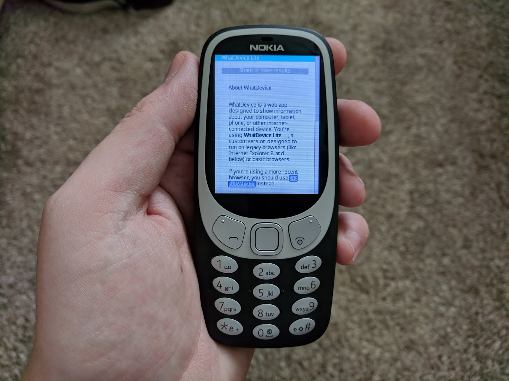

Slightly over a year ago, I started working on a web app called WhatDevice. I’ve been developing it on and off since then, and at long last, it’s out of beta! The app has changed quite a bit since I first announced it, so let me explain what it is.
There are plenty of instances where you may need to quickly find out information about your (or someone else’s) computer. But locating the information you need can be difficult, especially if you’re trying to diagnose an operating system you don’t normally use. If you usually work on a Mac, you might not know how to lookup the display resolution on Windows.
WhatDevice is a web app that displays as much information as possible using standard browser APIs and WebGL. It can provide data on both hardware and software, including the operating system, browser, display, graphics card, internet connection, and more.
WhatDevice also makes sharing this data incredibly easy. Just click the ‘Share results’ link at the top, or if you’re on a mobile device, tap the floating share button. You can send the results in an email, save them as a text file, and more. If you’re using Chrome for Android, you can send the results to any app you have installed on your phone.
This is a Progressive Web App, so you can install it to your home screen. Also, once you visit whatdevice.app on a supported browser, the entire site is cached locally, so you can open it even when you’re not connected to the internet.
One of my main focuses with WhatDevice was compatibility. The normal web app should work on all browsers released in the past few years, and on Internet Explorer 9+. I also built a 'lite’ version, which can be found at lite.whatdevice.app. The lite version works on basically every browser that can still connect to the internet. Here’s WhatDevice Lite on the Nokia 3310:

There are still more changes I’d like to make, but WhatDevice is relatively bug-free at this point, so I think now is a good time to drop the beta tag. You can try it out at whatdevice.app.
As a final note, all the source code for WhatDevice is available for free on GitHub, under the GPLv3 license.
{kind=link}